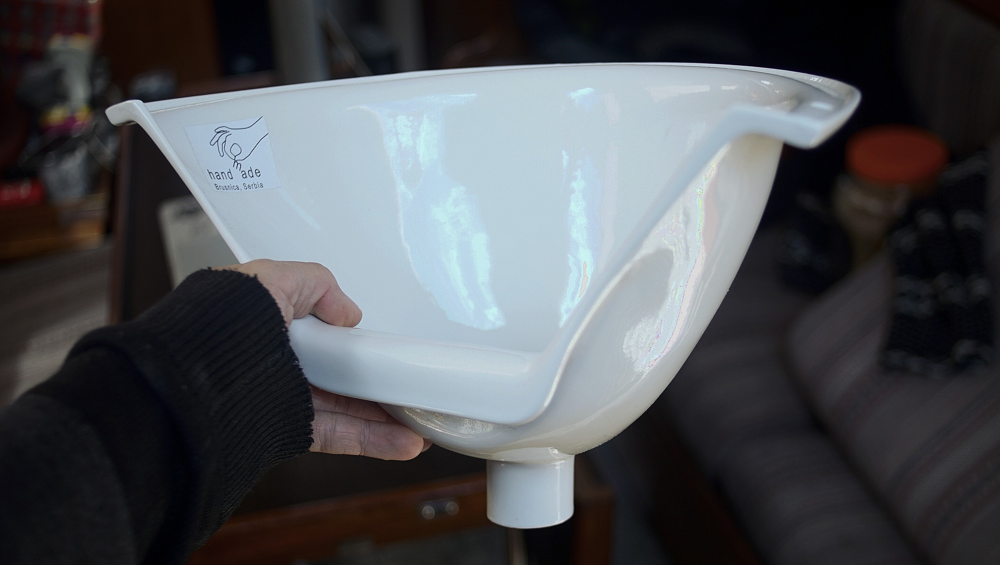
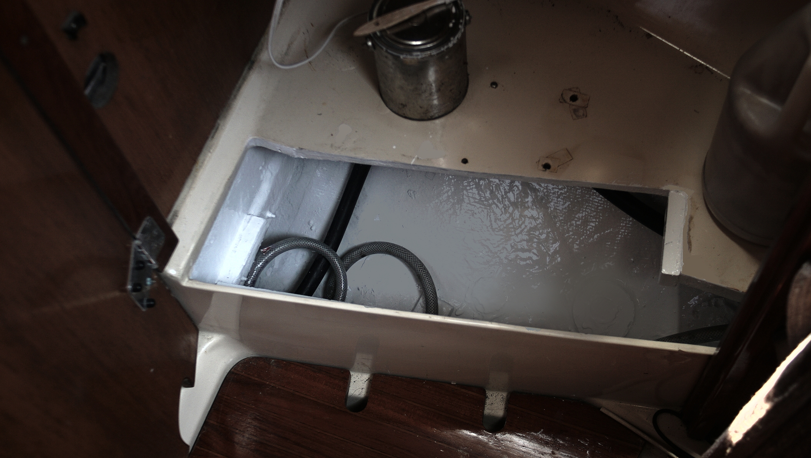
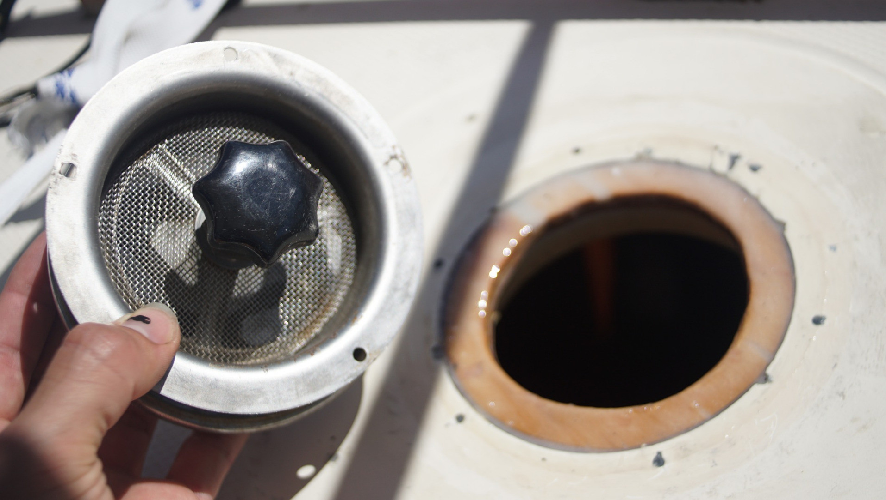
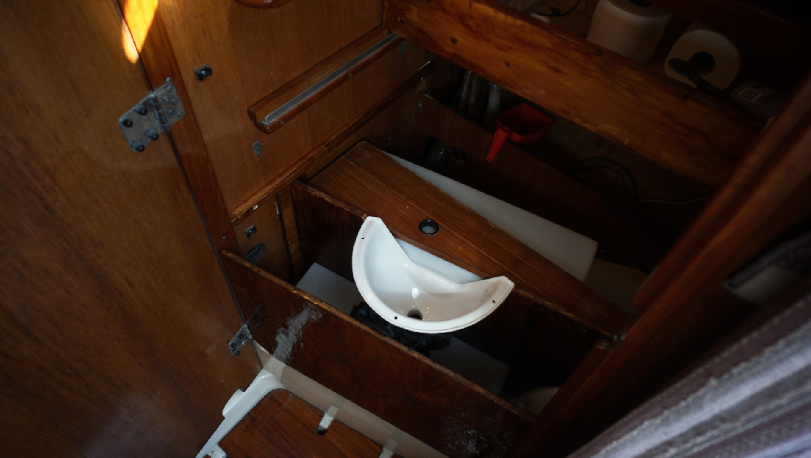
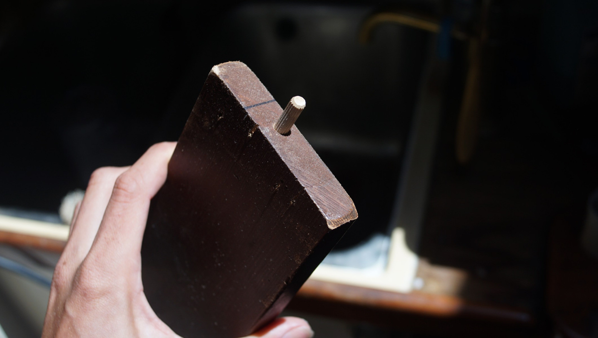
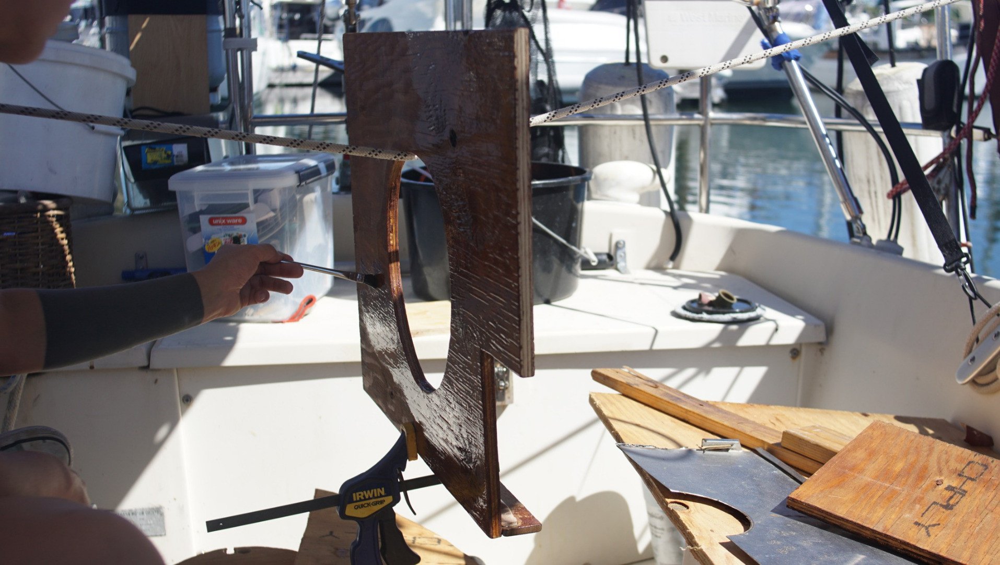
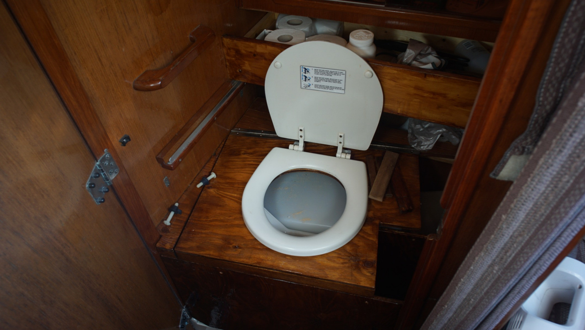
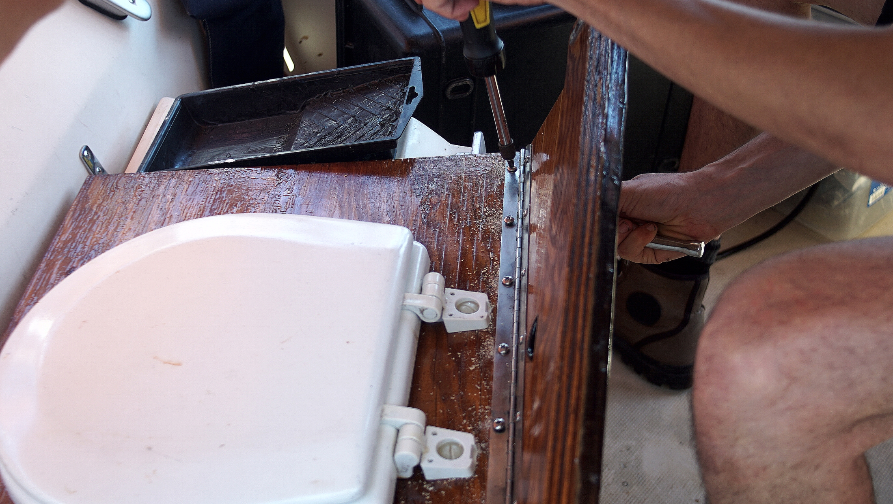
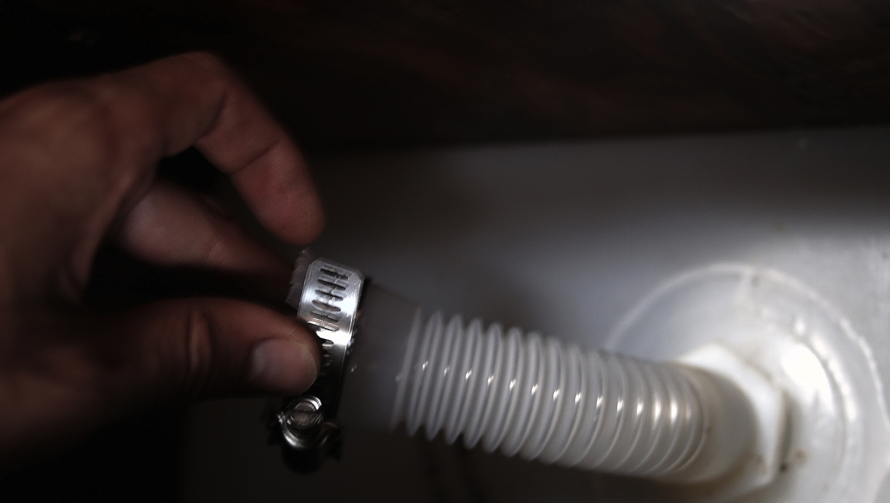

dry toilet installation
10.04-21 Purchased urine separator from Shit and Blossoms.
04-06-21 Removed thruhulls, macerator, raw water marine head and piping. Pino is so much lighter now! It is nice not to have the macerator thru-hull anymore, because it means we can use that locker to store gear! Prior to that, we couldn't put anything in there because it could damage the piping. That locker will now be reserved for tools.
05-06-21 Cut hole in floor for the liquids tank to fit into. If we did not make a hole, the toilet would be too high for us to sit on. There was already a hole there, to give access to the—now gone—head thru-hulls. We removed the door, with plans to re-use it, and enlargened the hole to fit the tank. The previous hole in the floor was a trapezoid.
06-06-21 We fibreglassed (and painted) some supports on the sides of the hole to level liquids tank. If the tank sits on the bottom, it is crooked and may squish some of the hoses running underneath.
10-06-21 A vent is important on a dry toilet, because it helps to dry out the solids, removing smells, hastening composting and discouraging insects. Our head used to have a solar vent, but it could not be closed. On boisterious passages, we often had salt water coming inside, and eventually, it killed the fan. So, we removed it, but it took us a long time to find an affordable and suitable replacement. While in japan, we temporarily put a used deckplate to plug the hole, but it too was leaky. We found a Vetus SS mushroom vent online this year, it looked immaculate, and more importantly it was sold for cheap (got it for 40$CAD). This vent has a green water shut off, ideal when underway. It's diameter was smaller than the hole we already had, so we had to reduce its size. We cut ring out of plywood, sized to the hole, placed it into the hole, glassed it in, painted it and then drilled 5 small holes for the vent. We added butyl tape (bed-it) between the deck and the vent base. Goal is to route a pipe to that to a fan, opening onto the solids tank. With a fan, the contents of the toilet will shrink rapidly, allowing much greater capacity.
16-06-21 Working on some of the structural woodwork for the installation. The head has a very weird shape, it narrows in two directions. We did many back and forths between workshop and the boat to get all the pieces to fit right. We used plywood from other projects, and found many useful bits from a discard bin in the workshop (even some pieces of teak!). We separated both the liquids and solids tank with a board, to provide stability, and added a board in the front (also for stability). We needed to build something that can take our weight, and that can withstand the constant motion that a boat is subject to.
18-06-21 We added three coats of instant coffee staining, and 1 coat of epoxy on all pieces of wood. We sanded the result lightly before adding the epoxy.
20-06-21 Trying to do the Shinto thing and building the whole thing without using nails or screws, using dowels. Using less metal on a boat is better anyway.
25-06-21 We placed the seat from our old marine head onto the board to test it out, and to draw the hole we would have to make. We drew the outline of the circle, with a 1.27 cm (1/2 in) of extra padding. We did not want the hole under the seat to line up perfect with it (to avoid messy accidents). We cut a hole in the lid with a jigsaw, epoxied it (hanging helps to coat all sides on the same day). We chose a very bad day to do epoxy. It was 34 C outside, too hot to do this sort of work, and the mixture would solidify way too quickly. We wasted a lot of resin and hardener because of this. We had to make 3 half batches to finish the lid, and each time it was a race against time, against the inevitable chemical reaction, trying to finish the work before the mixture would be rendered unusable. In the end, we had 3 containers with 3 shallow pools of hardened epoxy... what a waste. We could have waited, but this week the temperature is going to be far worse (forecast is for 38 C in two days). We would hate to imagine how quickly a resin and hardener mix would set at such a temperature.
26-06-21 Fixed the seat and cover on the top board. Happy we got to re-use at least one part from our old marine head. It has a good, sturdy design, and the fastening bolts are thick plastic. We also cut out a shape on the front of the solids tank to accomodate the lip of the urine diverter. The tank is plastic, so it was easy to cut with a hacksaw. We sanded the edges down with a metal bit, careful not to eat too much of the material away.
27-06-21 Managed to finish a couple of tasks. The lid (where the seat is attached) needs to be removable, but we also need to secure it while underway. We found 2 door bolt locks that we can use to hold it down. We built little bases for them today, and will secure those to the wall.
28-06-21 Screwed in piano hinge onto the edge of lid, which we'll attach to another piece of wood that will be used to hold the entire lid down using the two bolt locks. The whole lids need to be removable because we need full access to the solids tank underneath to empty it.
30-06-21 We bought some plastic jerry cans in Japan for water, they with these plastic nozzles, used to transer the water. We weren't using them, we have a self-priming jiggler pump that we prefer to use to transfer liquids. We found that this piece was perfect to use as the tube between the diverter and the liquids tank. We had to cut slits into the top to fit it to the exit of the diverter, we also applied a bit heat with a heat gun to stretch out the material. The other end fits into the liquids tank. We squeezed the thicker, 'ribbed' part of the pipe through the tank fitting, and it makes a tight, tight seal.
Still not finished... more steps to come.